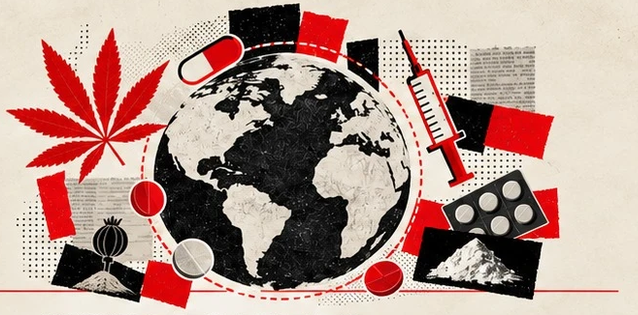
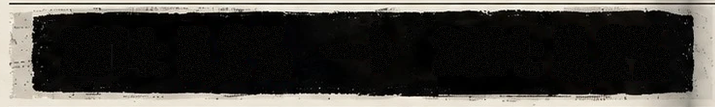

UM MERCADO QUE MUDA DE FORMA
Drogas no mundo — estimativas referentes a 2024
331
MILHÕES
Pessoas de 15 a 64 anos que
utilizaram alguma droga
no ano anterior.
6,2%
Da população mundial entre
15 e 64 anos: aproximadamente
uma em cada 16 pessoas.
A prevalência subiu em relação a 2014.
OS GRUPOS MAIS UTILIZADOS(MILHÕES DE PESSOAS)
2014: 5,2% → 2024: 6,2%
A prevalência aumentou cerca de 20%,
e o número estimado de pessoas que
usaram drogas cresceu 34% desde 2014.
O QUE ESSE CRESCIMENTOMOSTRA?
Não se trata apenas de mais
população. A parcela da
população que relatou uso
também cresceu, o que indica
uma ampliação real do
fenômeno observado
pelo UNODC.
O QUE PODE ESTAR MUDANDONOS MERCADOS?
- Novas substâncias sintéticas
ampliam a diversidade na oferta. - Tecnologias, rotas e redes
de distribuição tornam o mercado
mais adaptável. - Mudanças regulatórias e de
percepção social afetam alguns
padrões de consumo.
ALÉM DO CONSUMO
Em 2024, cerca de 63 milhões
de pessoas viviam com
transtornos por uso de drogas,
e apenas uma parcela recebeu
tratamento.
Acesso ao cuidado continua
sendo parte central do problema.
LEITURA DA EQUIPE
Quem consome é apenas uma
parte da história. Também
precisamos perguntar quem
produz, quem distribui, quem
lucra e quais condições tornam
a oferta acessível.
Fonte: UNODC. World Drug Report 2026 (estimativas de 2024).
Álcool e tabaco não estão incluídos; categorias podem se sobrepor.